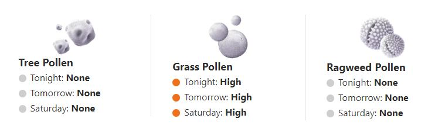
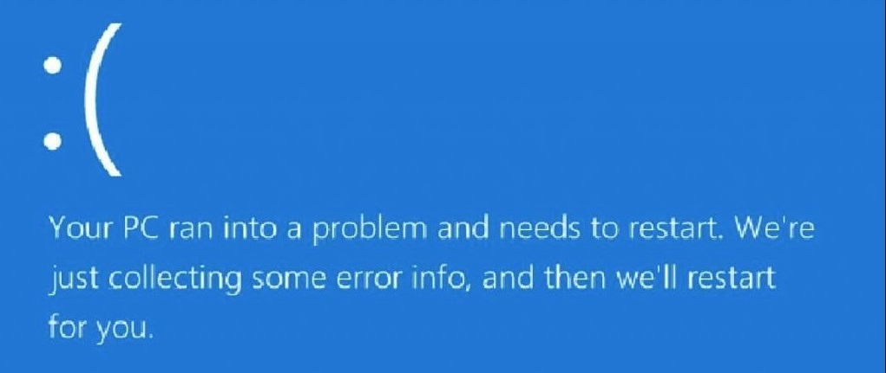
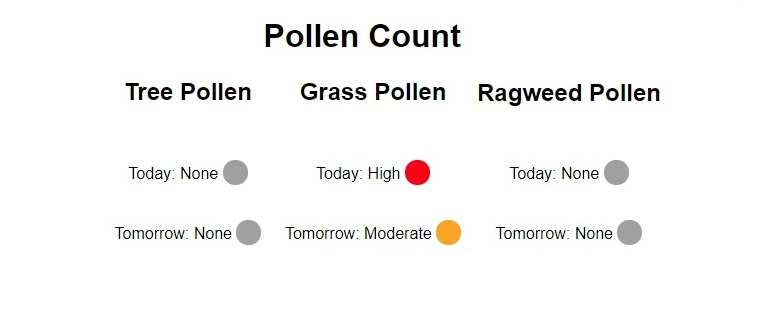

The Beginning
Research, July 6, 2020
Research
After Covid started and University ended I was stuck for a project to do. I played around with a few ideas and eventually came up with this idea. A scarper and server to host the data on the network.
Scraper
July 7, 2020
Scraper Software
After using Python previously for a scraper I decided to use
it again. I started by finding a pollen counting site, using
weather.ie which had a nice layout (if terribly awkward class names).
I then used my knowledge of Python to gather this data and save
it to a text file.
This scraper involves a loop so it will run and update the data every night.
Server Software
Server research & implemtation, July 8, 2020
Server Software
Starting off without much of an understanding I quickly learned. I set my eyes on XAMPP, I got
everything downaloded, then hit a roadblock. No matter what I did the installation would fail.
With a hours of work I still made it nowhere. But keep in mind I am running this on an Optiplex 745,
with 3gb of ram, a Core 2 Duo and three drives, one of which is almost 10 years old. Also the computer
is also a decade years old.
Either way with some time I gave up and went in search of something else.
Setting eyes on Wamp. After some time of setting up the C++ distributions I had success!
Then
blue screen of death...
Website
July 8, 2020

HTML Work
Now that I have the server working and I didnt want to deal with the blue screem. I started working on the visual aspet of the data. I created a small index to pull the data and display in an appealing way. Emulating the weather website to a degree.
Computer
July 9, 2020
Blue Screen
Now I had to deal with the blue screen. The machine I'm working with only has 3gb of ram alongside the
afformetioned issues. This is an issue for many reasons. I was thinking of ways to fix this when I landed on a better idea.
When the computer blue screens it does some diagnostic work then restarts. Instead of fixing the issue, I can just work around it.
I created a script to start all necessary programs on pc start. I also disabled the need for a username and password. So it will
log straight in and lastly I disabled the admin window so it does not ask for priviledges on server start.
This adds a satisfactory level
of reliability which I am very proud of.
Finished
July 9, 2020
Although some work can still be done, for instance tidying the code, for now I am happy with my creation. The Git is linked if you want to have a look. Now its just a matter of seeing how reliable the pc is and is anything breaks with time.
About This Project
I always need to have a project to keep me entertained. To this end I came up with this idea during the famous Summer of 2020 to keep myself programmatically occupied.
Link to project github